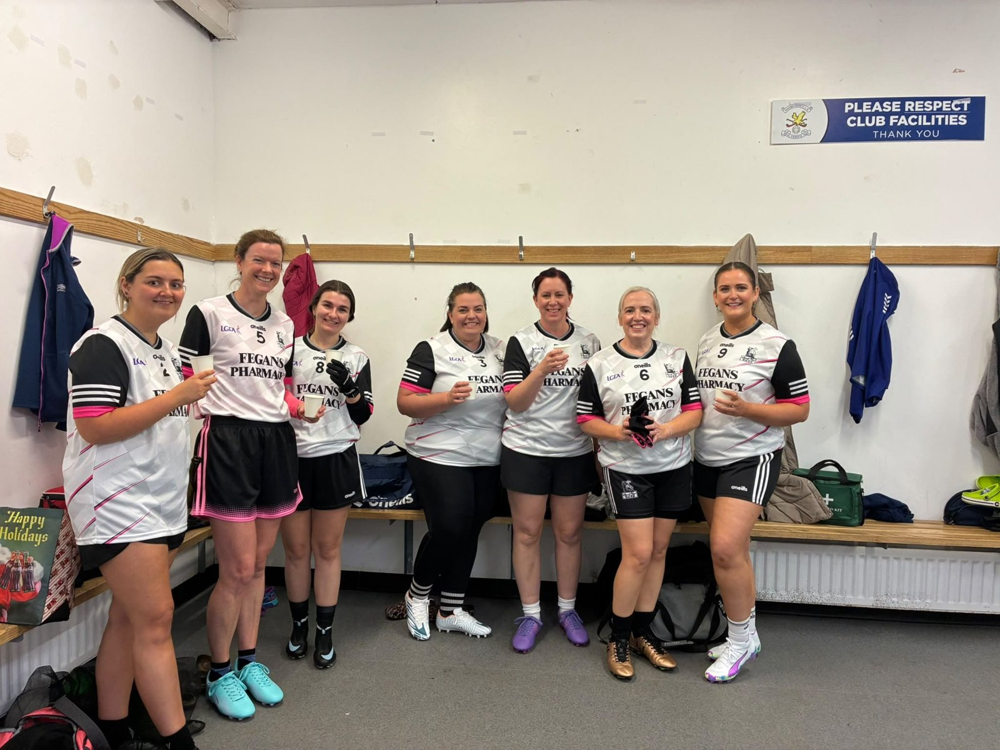

Weekly Club Newsletter
St Agnes Weekly Round-Up
A historic G4M&O first and a brilliant Paul Cole Tournament for our U6, U10 and U12 players.
Read NewsletterNews
Announcements, match reports, juvenile updates, events and community stories.
Featured Stories
Weekly Club Newsletter
A historic G4M&O first and a brilliant Paul Cole Tournament for our U6, U10 and U12 players.
Read Newsletter
Historic First
A proud milestone for a brilliant team formed only one year ago.
Read the StoryMatch Reports
Older results and match reports are now kept together in the club archive.